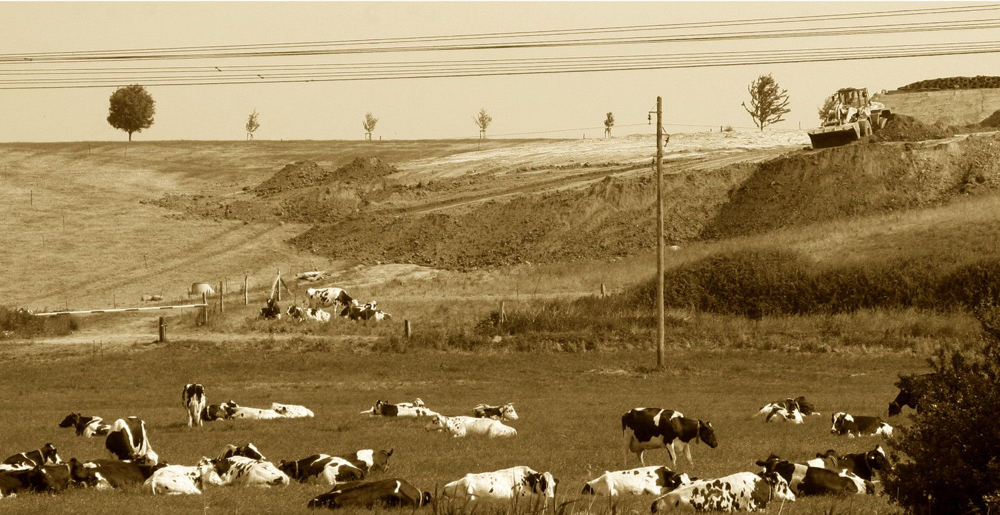

Boden

Verbrannte Erde
Wie unser Planet Erde einst entstanden sein mag, wird nie ganz aufgeklärt werden. Dass er einmal ein Feuerball gewesen ist, dürfte unbestritten sein. Durch sein langsames Erkalten bildete sich die Erdrinde. „Und die Erde war wüst und leer“, steht im Alten Testament, was auch gestimmt haben dürfte, denn zunächst war sie schutzlos den tödlichen Strahlen von Kosmos und Sonne ausgesetzt. Später machte die Natur eine geniale Erfindung. Sie schuf das Chlorophyll, das Blattgrün, und die Zelle. Es entstand das Leben, die Umwandlung anorganischer in organische Stoffe, die Abgabe von Sauerstoff in die Atmosphäre und die Vermehrung. Wo das Grün sich ausbreitete, erhielt die Erde eine Klimaanlage und die Möglichkeit der Entwicklung von Pflanzen, Tieren und des Menschen. Der Mensch wurde jedoch bald zum Gegenpol des Lebens, denn er begann die Klimaanlage zu zerstören. Mit dem Bevölkerungswachstum und Steigerung der Produktion rodete er immer mehr Wald als Baumaterial, zur Energieerzeugung und für Acker- und Weideland. Die Kämpfe um Macht und Lebensraum wurden zu Weltkriegen und „verbrannter Erde“, wie Hitler auf dem Rückzug befahl. Und die USA entlaubten in Vietnam die Wälder chemikalisch. Heute ist das Leben ständig durch atomare, chemische, biologische, kosmische und andere Waffen bedroht. Die grüne, das Klima schützende Hülle der Erde kann sich nicht so schnell regenerieren, wie sie zerstört wird. Wo sie schwindet, versengen die Strahlen wie zu Urzeiten die Erdoberfläche zu Wüsten, erzeugen Luftbewegungen und Verdunstung. Waldbrände und Naturkatastrophen beschleunigen den Zerstörungsprozess. Wo noch Grass wächst, sorgt eine Armee von Rasenmähern, dass die Halme kurz gehalten werden und der Boden schneller austrocknen kann. Was wir nicht zubetonieren, können wir nicht schnell genug in verbrannte, vergiftete Erde verwandeln. Wenn wir nicht schnellstens umdenken lernen, wird unser Testament lauten: „Und die Erde wird wüst und leer sein!“
Helmut Hauck
Tollensetaler Stimme 2015-06, Seite 9